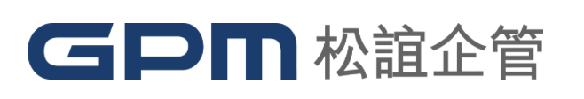

松誼企管 2025 Leader Trend 智慧人才佈局｜精準賦能未來領導者 互動遊戲
1. 當遇到新科技工具時，你會：
馬上試用，探索新功能
思考它能否長期發展
和同事分享、一起研究
找資料或數據來評估
擔心可能的風險與倫理問題
2. 你在團隊中最常扮演的角色是：
溝通橋樑，促進協作
制定計畫，分配任務
提出新點子，激發創意
根據數據給建議
注意公平與規範
3. 你最希望 AI 幫助你的是：
分析數據，找到趨勢
協助團隊協作
提供決策支援
開創新服務或產品
監督 AI 的風險與透明度
4. 在會議中，你通常會：
注意別人是否被忽視
確保討論有長遠規劃
激盪新點子
提供數據佐證
把不同意見整合起來
5. 如果要形容你的工作風格，最接近的是：
穩健規劃，按部就班
喜歡挑戰，勇於嘗試
團隊至上，協作共好
仰賴數據，理性分析
注重價值與公平
提交答案
👉 關注松誼企管 粉絲專頁，了解更多人才發展議題
前往粉絲專頁
🎁 出示關注畫面可與工作人員領取小禮物